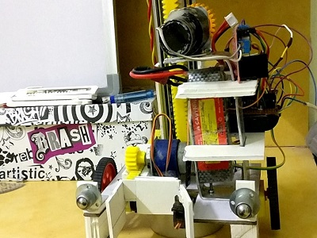
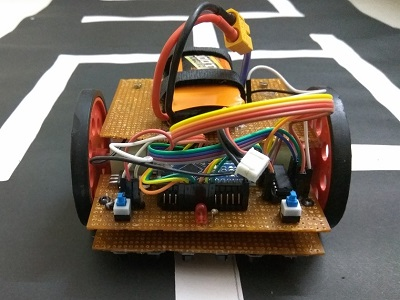
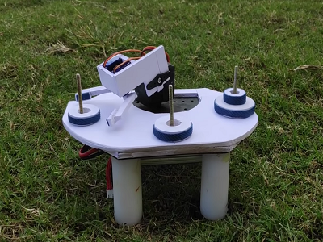
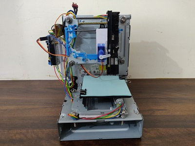
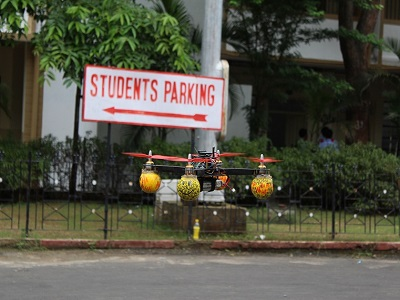
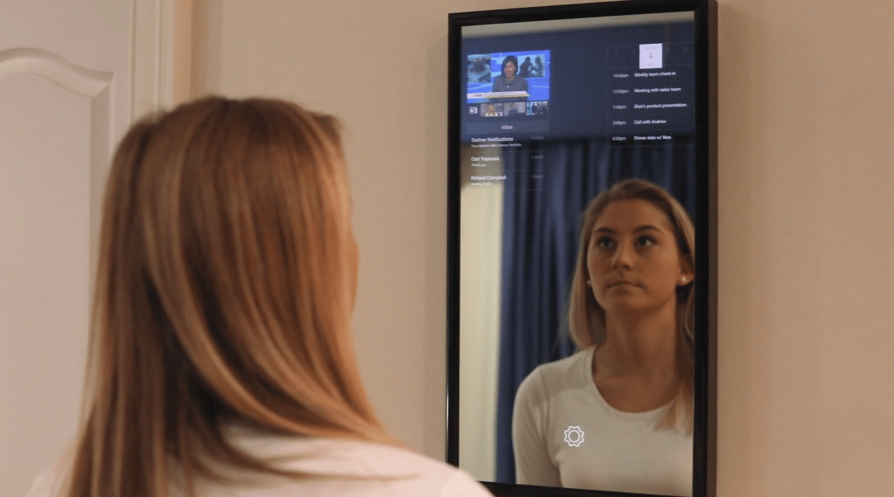
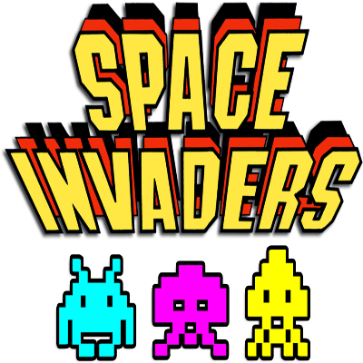
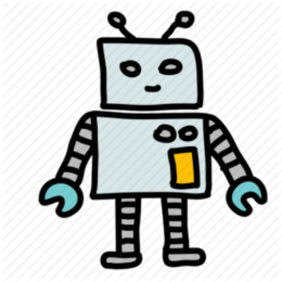

Back
Archive
Before the datacenters there were robots. Competition builds, computer-vision experiments and simulations from 2017 onward — most of them still run.
01
Robotics
Built for competition, mostly at 3am.

Wall-climbing robot Built for Escalade at IIT Guwahati: climb a vertical wall and complete tasks against the clock. First place out of 60 teams.
Maze-solving robot Records every turn on a dry run, then eliminates the dead-end U-turns to compute the shortest path on the second pass. Third at Techfest, IIT Bombay.
Tower of Hanoi robot A robotic arm that solves the puzzle physically — the recursive solution driving real servos rather than console output.
CNC portrait plotter Detects a face in a photograph, reduces it to strokes, and drives a two-axis plotter to draw the sketch on paper.
Quadcopter Built from the frame up. The starting point for a longer detour into autonomous flight and crop-health monitoring.
02
Computer vision
Cameras pointed at problems.
Park It
Mask R-CNN over parking-lot camera feeds to find genuinely vacant bays, with an Android app to reserve one before you drive out. Smart India Hackathon finalist.

Smart mirror A mirror that tracks your face and overlays eyewear in real time, so the fitting-room queue becomes optional.
Space Invader, motion-controlled The arcade classic rebuilt so the ship follows your body instead of the arrow keys. Playing it counts as light exercise.
03
Simulations
All four still run in the browser.
Neuroevolution of Flappy Bird
A population of neural networks evolved by genetic algorithm across generations until the birds stop hitting pipes.
Smart Rockets
Rockets encode their thrust sequence as DNA and breed toward the target across generations, learning to steer around the obstacle.

Maze solver Generates a maze, then visualises shortest-path search through it — the textbook graph algorithms made watchable. Snake The first game I ever finished. Kept here mostly for sentimental reasons.
04